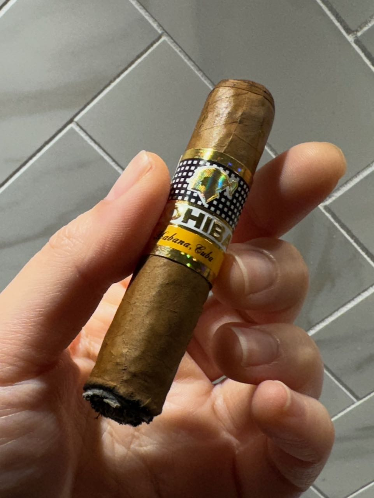
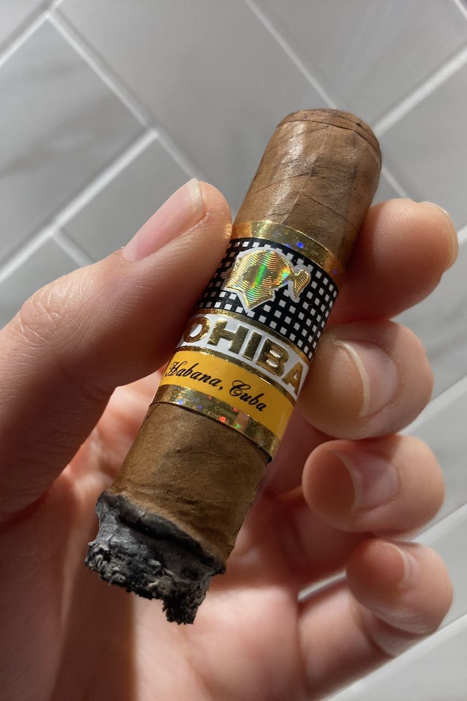

Cigar Log: Cohiba Siglo I (2)
Happy Friday! Hope everyone's day has been going well so far. Today we will be looking at a beautiful small Cohiba cigar. This is my second Siglo I and I had a better experience with this one.
The first few puffs was so creamy. It was like sweet tobacco. It was much smoother than what I had previously. It's strange that when I first light it up, the whole feet just turn black. It was only at the start and back to normal very soon.
Coming to the middle third, it was very similar tobacco taste. There's not much sweetness around and the flavours feel much more fainted. I didn't taste any spice at all at this point unlike last time, which is definitely nice. 👍


The draw was a bit too tight but still flows. I had to be careful to not draw too hard or too light. The burn was a bit crooked. I had to fix it one time but just that once. It self corrected itself most of the time.
The ash is not as black as last time. I think I draw too hard too fast last time that I tasted pretty much just bitter spicy ash. This time, I slowed down a lot and purged often. I was actually able to taste more. The ash couldn't seem to build up very long. It was kinda fragile.
Coming to the final third, I smoked it down almost all the way to the nub. It's a little overheat and the flavours are pretty much all gone at this point. I had a bit of salty tobacco and that's all I could describe. Good session and I thoroughly enjoy it.

The smoke time for this one was about 50 minutes. I really took my time by reading a book with this cigar. I think this is a better size for me to sit down and enjoy everything it can offer. I would definitely pick up more of these in the future.
Anyways, that's all I have for today. As I mentioned earlier, this is the second Cohiba Siglo I that I had and you can check out my first impression of Cigar Log: Cohiba Siglo I next. Thanks for staying around. Hope you enjoy this post and have a fabulous day!